7.6 Práctica en R
Un ejemplo sencillo sobre el manejo de series temporales que puede realizarse con algunos paquetes de R.
Datos
Los datos utilizados corresponden a las ventas mensuales para una tienda de souvenirs en un balneario de Queensland, Australia, de enero de 1987 a diciembre de 1993 (Ver aquí. Datos originales de Wheelwright y Hyndman, 1998).
Librerías
A lo largo de esta práctica se utilizan las siguientes librerías:
- XTS: eXtensible Time Series y
- HIGHCHARTER: a R wrapper for Highcharts javascript libray and its modules. .
Los manual de usuario de ambos paquetes esta disponibles en la siguientes enlaces: Manual de XTS y Manual de HIGHCHARTER
Para instalar un paquete de R, se puede usar el comando: install.packages("nombre del paquete"). Por ejemplo, install.packages("xts"). De forma alternativa:
# Get xts
if (!require("xts")) {install.packages("xts"); library(xts)}
# Get highcharter
if (!require("highcharter")) {install.packages("highcharter"); library(highcharter)}
# Get tseries
if (!require("tseries")) {install.packages("tseries"); library(tseries)}Lectura y Visualización
Obtenemos los datos en el site de la Time Series Data Library (TSDL). (Los datos están aquí.
datos = scan("http://robjhyndman.com/tsdldata/data/fancy.dat")
datos = log(datos) #transformación opcional
head(datos,5) #primeros 5 datosFALSE [1] 7.41747 7.78219 7.95181 8.17394 8.23030tail(datos,5) #últimos 5 datosFALSE [1] 10.2607 10.3257 10.3360 10.7501 11.5585Objeto XTS
La forma más conocida para la creación de un objeto de la clase serie temporal, es el uso de la función ts. En este ejemplo, creamos la serie temporal sales.ts a partir de datos.
Sin embargo, la manipulación de la serie es bastante más natural y amigable utilizando un objeto de la clase xts. En este ejemplo se crea el objeto sales a partir de datos y se hacen consultas básicas sobre su contenido (fechado, primer dato, últimas semanas, número de semanas en la muestra, etc.)
sales = as.xts(sales.ts) #creación del objeto XTS
is.xts(sales) #debe devolver TRUEFALSE [1] TRUEperiodicity(sales) #fechado de los datosFALSE Monthly periodicity from ene. 1987 to dic. 1993first(sales) #primer datoFALSE [,1]
FALSE ene. 1987 7.41747last(sales) #último datoFALSE [,1]
FALSE dic. 1993 11.5585first(sales, '7 months') #primeros 7 diasFALSE [,1]
FALSE ene. 1987 7.41747
FALSE feb. 1987 7.78219
FALSE mar. 1987 7.95181
FALSE abr. 1987 8.17394
FALSE may. 1987 8.23030
FALSE jun. 1987 8.22006
FALSE jul. 1987 8.37784last(sales, '2 quarters') #últimas dos semanasFALSE [,1]
FALSE jul. 1993 10.1718
FALSE ago. 1993 10.2607
FALSE sep. 1993 10.3257
FALSE oct. 1993 10.3360
FALSE nov. 1993 10.7501
FALSE dic. 1993 11.5585nmonths(sales) #número de meses en la muestraFALSE [1] 84nquarters(sales) #número de trimestres en la muestraFALSE [1] 28nyears(sales) #número de años en la muestraFALSE [1] 7Selección de datos usando las fechas
Una funcionalidad interesante es la obtención de sub-muestras, utilizando la(s) fecha(s) como criterio(s) de selección.
sales['1990-01-01/1990-05-01'] #todos los datos del 01 al 05 de Febrero de 1990FALSE [,1]
FALSE ene. 1990 8.68628
FALSE feb. 1990 8.66812
FALSE mar. 1990 9.42716
FALSE abr. 1990 8.75932
FALSE may. 1990 8.93710first(sales['1991'], '5 month') #primeros 5 meses desde Febrero de 1989FALSE [,1]
FALSE ene. 1991 8.48191
FALSE feb. 1991 8.77497
FALSE mar. 1991 9.17355
FALSE abr. 1991 9.08491
FALSE may. 1991 9.07365last(sales['1990'], '1 quarter') #datos último mes de 1990FALSE [,1]
FALSE oct. 1990 9.04508
FALSE nov. 1990 9.79337
FALSE dic. 1990 10.31276rbind(sales['1987-10/1988-03'],sales['1988-10/1989-03']) #todos los datos del 01 al 05 de Febrero de 2011 y 2012FALSE [,1]
FALSE oct. 1987 8.76772
FALSE nov. 1987 8.93598
FALSE dic. 1987 9.89122
FALSE ene. 1988 7.82397
FALSE feb. 1988 8.55608
FALSE mar. 1988 8.88532
FALSE oct. 1988 8.67165
FALSE nov. 1988 9.44146
FALSE dic. 1988 10.25912
FALSE ene. 1989 8.45893
FALSE feb. 1989 8.64868
FALSE mar. 1989 9.20609Cambios de Fechado
El cambio de fechado o periodicidad es una operación muy útil durante el trabajo con series temporales. En este ejemplo, como la variable analizada corresponde a las ventas mensuales, se utiliza la función sum para obtener las ventas trimestrales y anuales.
sales.qua=apply.quarterly(sales, sum) # datos trimestrales
first(sales.qua, '3 quarters')FALSE [,1]
FALSE mar. 1987 23.1515
FALSE jun. 1987 24.6243
FALSE sep. 1987 25.0787sales.yea=apply.yearly(sales, sum) # datos anuales
first(sales.yea, '3 years')FALSE [,1]
FALSE dic. 1987 100.449
FALSE dic. 1988 105.113
FALSE dic. 1989 108.676Imputación de Datos Faltantes
La falta de algunos datos y/o la presencia de datos errones suele tratarse con procedimientos de imputación - para no perder histórico de la muestra disponible. El paquete xts posee funciones que permiten extender hacia adelante o hacia atrás, valores observados en la misma serie temporal.
aux=sales['1990-01-01/1990-03-01']
sales['1990-01-01/1990-03-01']=NA
sales['1990-01-01/1990-03-01']FALSE [,1]
FALSE ene. 1990 NA
FALSE feb. 1990 NA
FALSE mar. 1990 NA(isna=which(is.na(sales))) #identifica las líneas con NAFALSE [1] 37 38 39sales.na01=na.locf(sales) #repite el ultimo anterior a NA
sales.na01[isna,]FALSE [,1]
FALSE ene. 1990 10.4359
FALSE feb. 1990 10.4359
FALSE mar. 1990 10.4359sales.na02=na.locf(sales, fromLast=TRUE) # repite el primero despues de NA
sales.na02[isna,]FALSE [,1]
FALSE ene. 1990 8.75932
FALSE feb. 1990 8.75932
FALSE mar. 1990 8.75932sales.na03=na.locf(sales, na.rm=TRUE, fromLast=TRUE)
sales.na03[isna,]FALSE [,1]
FALSE ene. 1990 8.75932
FALSE feb. 1990 8.75932
FALSE mar. 1990 8.75932sales[isna,]=auxEstadísticos en diferentes fechados
El paquete xtspermite trabajar con series de estadísticos en fechado agregado. Por ejemplo, el máximo del mes, el mínimo del trimestre, etc. El ingrediente indispensable es el vector que indica los puntos de quiebre de la serie. Este vector se obtiene con la función endpoints.
aux.qq=endpoints(sales,"quarters") #indica los finales de trimestre
par(mfrow=c(1,3), cex.lab=0.8,cex.axis=0.8,las=2)
plot(period.sum(sales,aux.qq), main="Total")
plot(period.min(sales,aux.qq), main="Mínimo")
plot(period.max(sales,aux.qq), main="Máximo")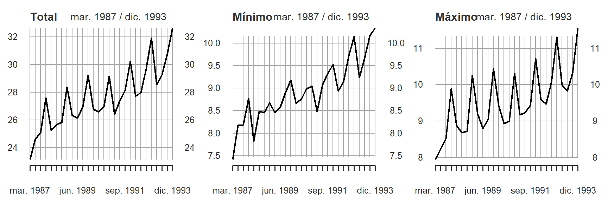
aux.yy=endpoints(sales,"years") #indica los finales de año
par(mfrow=c(1,3),cex.lab=0.8,cex.axis=0.8,las=2)
plot(period.sum(sales,aux.yy), main="Total")
plot(period.min(sales,aux.yy), main="Mínimo")
plot(period.max(sales,aux.yy), main="Máximo")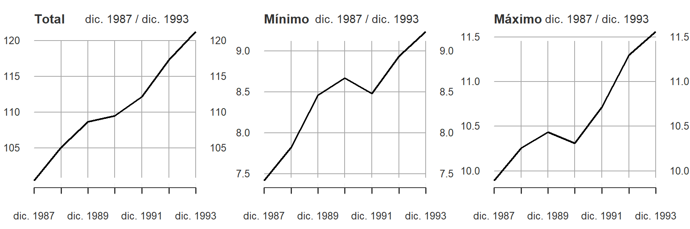
División del conjunto de datos usando fechas
Otra funcionalidad útil es split. Permite dividir el objeto original en sub-conjuntos, teniendo en cuenta un fechado y un horizonte. En este caso, se divide el objeto sales en sub-muestras de 4 meses cada una.
sales.by.4months=split(sales, f="months",k=4)
sales.by.4months## [[1]]
## [,1]
## ene. 1987 7.41747
## feb. 1987 7.78219
## mar. 1987 7.95181
## abr. 1987 8.17394
##
## [[2]]
## [,1]
## may. 1987 8.23030
## jun. 1987 8.22006
## jul. 1987 8.37784
## ago. 1987 8.17930
##
## [[3]]
## [,1]
## sep. 1987 8.52155
## oct. 1987 8.76772
## nov. 1987 8.93598
## dic. 1987 9.89122
##
## [[4]]
## [,1]
## ene. 1988 7.82397
## feb. 1988 8.55608
## mar. 1988 8.88532
## abr. 1988 8.47763
##
## [[5]]
## [,1]
## may. 1988 8.68286
## jun. 1988 8.50741
## jul. 1988 8.72893
## ago. 1988 8.46635
##
## [[6]]
## [,1]
## sep. 1988 8.61185
## oct. 1988 8.67165
## nov. 1988 9.44146
## dic. 1988 10.25912
##
## [[7]]
## [,1]
## ene. 1989 8.45893
## feb. 1989 8.64868
## mar. 1989 9.20609
## abr. 1989 8.57636
##
## [[8]]
## [,1]
## may. 1989 8.77839
## jun. 1989 8.79948
## jul. 1989 8.90240
## ago. 1989 9.00903
##
## [[9]]
## [,1]
## sep. 1989 9.05639
## oct. 1989 9.17890
## nov. 1989 9.62588
## dic. 1989 10.43591
##
## [[10]]
## [,1]
## ene. 1990 8.68628
## feb. 1990 8.66812
## mar. 1990 9.42716
## abr. 1990 8.75932
##
## [[11]]
## [,1]
## may. 1990 8.93710
## jun. 1990 8.88527
## jul. 1990 9.00224
## ago. 1990 8.98460
##
## [[12]]
## [,1]
## sep. 1990 8.99876
## oct. 1990 9.04508
## nov. 1990 9.79337
## dic. 1990 10.31276
##
## [[13]]
## [,1]
## ene. 1991 8.48191
## feb. 1991 8.77497
## mar. 1991 9.17355
## abr. 1991 9.08491
##
## [[14]]
## [,1]
## may. 1991 9.07365
## jun. 1991 9.23107
## jul. 1991 9.33048
## ago. 1991 9.43765
##
## [[15]]
## [,1]
## sep. 1991 9.36198
## oct. 1991 9.51833
## nov. 1991 9.99068
## dic. 1991 10.71577
##
## [[16]]
## [,1]
## ene. 1992 8.93788
## feb. 1992 9.19520
## mar. 1992 9.58592
## abr. 1992 9.35767
##
## [[17]]
## [,1]
## may. 1992 9.14126
## jun. 1992 9.47900
## jul. 1992 9.72512
## ago. 1992 9.89790
##
## [[18]]
## [,1]
## sep. 1992 10.0830
## oct. 1992 10.1422
## nov. 1992 10.4920
## dic. 1992 11.2988
##
## [[19]]
## [,1]
## ene. 1993 9.23437
## feb. 1993 9.32962
## mar. 1993 9.99090
## abr. 1993 9.76177
##
## [[20]]
## [,1]
## may. 1993 9.68021
## jun. 1993 9.83100
## jul. 1993 10.17180
## ago. 1993 10.26069
##
## [[21]]
## [,1]
## sep. 1993 10.3257
## oct. 1993 10.3360
## nov. 1993 10.7501
## dic. 1993 11.5585 #divide el conjunto de datos en partes de 4 meses cada una
summary(sales.by.4months) #indica el número de elemento que hay en cada parte## Length Class Mode
## [1,] 4 xts numeric
## [2,] 4 xts numeric
## [3,] 4 xts numeric
## [4,] 4 xts numeric
## [5,] 4 xts numeric
## [6,] 4 xts numeric
## [7,] 4 xts numeric
## [8,] 4 xts numeric
## [9,] 4 xts numeric
## [10,] 4 xts numeric
## [11,] 4 xts numeric
## [12,] 4 xts numeric
## [13,] 4 xts numeric
## [14,] 4 xts numeric
## [15,] 4 xts numeric
## [16,] 4 xts numeric
## [17,] 4 xts numeric
## [18,] 4 xts numeric
## [19,] 4 xts numeric
## [20,] 4 xts numeric
## [21,] 4 xts numericOtras operaciones con los datos
Finalmente, se presenta un ejemplo de una serie obtenida a partir del uso de operaciones básicas de R como diff y log.
sales.inc <- diff(log(sales), lag = 1) #Tasa de incremento mensual
sales.inc <- sales.inc[-1] #Eliminamos el primer dato por ser NA
par(mfrow=c(1,1),cex.lab=0.8,cex.axis=0.8,las=2)
plot(sales.inc, main = "Nuevas Ventas",
col = "grey", xlab = "Date", ylab = "Variación", major.ticks='years',
minor.ticks=FALSE)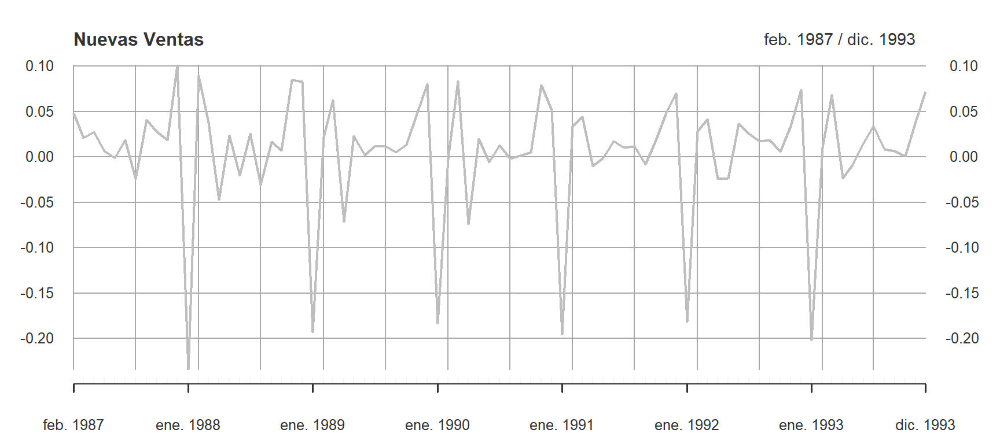
Gráficos con xts
Los gráficos de objetos xts son bastante más visuales o legibles que los objetos ts. La principal diferencia está en el reconocimiento de las fechas y su visualización en el eje horizontal.
par(mfrow=c(1,1),cex.lab=0.8,cex.axis=0.8,las=2)
plot(sales, main = "Ventas Mensuales",
col = innCol[1],xlab = "Date", ylab = "Ventas", major.ticks='quarters',
minor.ticks=FALSE)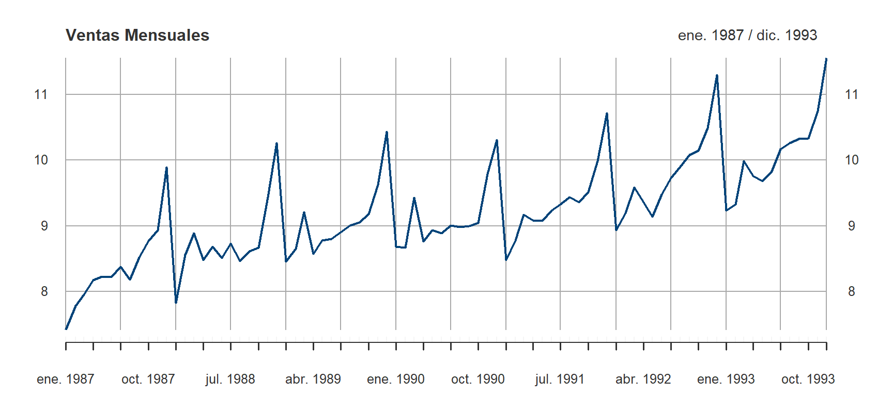
Gráficos con highcharter
Los gráficos generados con highcharter utilizan la biblioteca Highcharts
highchart() %>%
hc_chart(type="line",zoomType="x")%>%
hc_title(text = "Ventas Mensuales") %>%
hc_subtitle(text = "Gráfico Tipo Línea") %>%
hc_legend(enabled = T) %>%
hc_tooltip(valueDecimals= 2,shared=T, crosshairs=T) %>%
hc_xAxis(type = 'datetime',
tickInterval=10,
labels = list(format = '{value:%m-%Y}',rotation=-90)) %>%
hc_add_series(data=sales.ts,
name = "Ventas",
color = innCol[1],
lineWidth= 1) %>%
hc_credits(enabled = TRUE, # add credits
text = "Elaborado por Innova-tsn",
href = "https://www.innova-tsn.com") %>%
hc_exporting(enabled = TRUE)hc <- highchart(type="stock") %>%
hc_title(text = "Ventas Mensuales") %>%
hc_subtitle(text = "Gráfico tipo Stock") %>%
hc_legend(enabled = T) %>%
hc_tooltip(valueDecimals= 0) %>%
hc_add_series(data=sales.ts,
name = "Ventas",
color = innCol[1]) %>%
hc_credits(enabled = TRUE, # add credits
text = "Elaborado por Innova-tsn",
href = "https://www.innova-tsn.com")
hcTendencia (anual)
plot(sales.ts,main="Venta", type="l")
abline(lm(sales.ts ~ time(sales.ts)),col="#9d9fa0",lty=3)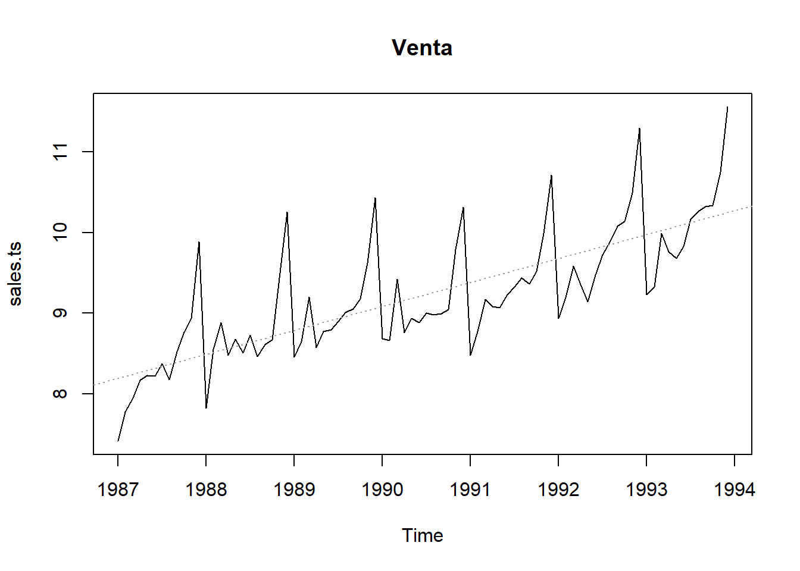
Tendencia (anual)
plot(aggregate(sales.ts,FUN=mean),main="Venta media por Año", type="h")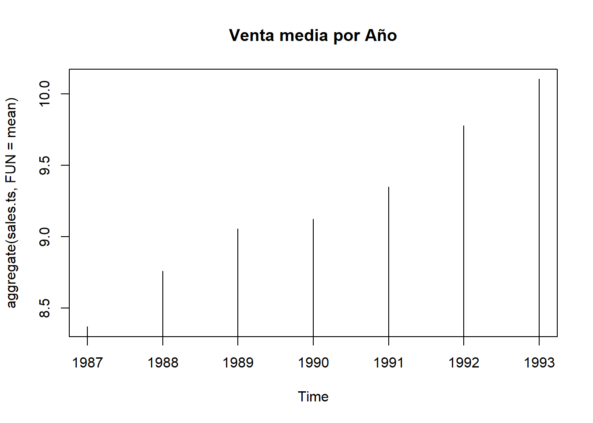
Estacionalidad
boxplot(sales.ts~cycle(sales.ts), main="Ventas por Mes")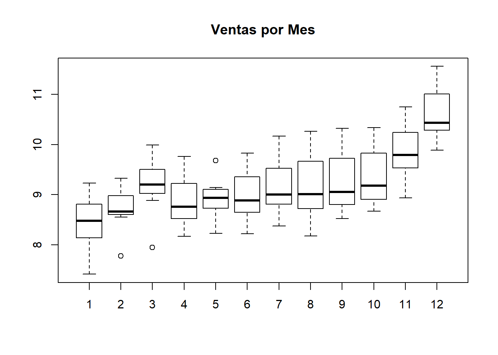
Variacion anual (diferencia)
sales.ts.diff = diff(sales.ts, differences = 12)
plot(sales.ts.diff)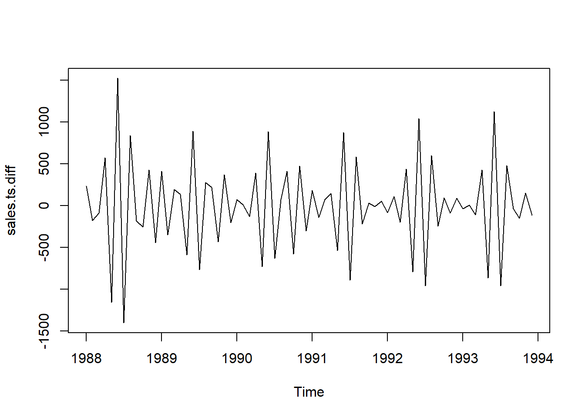
Test de Estacionariedad
adf.test(diff(sales.ts,12), alternative="stationary", k=0)Augmented Dickey-Fuller Testdata: diff(sales.ts, 12) Dickey-Fuller = -4.705, Lag order = 0, p-value = 0.01 alternative hypothesis: stationary
ACF
acf(sales.ts.diff)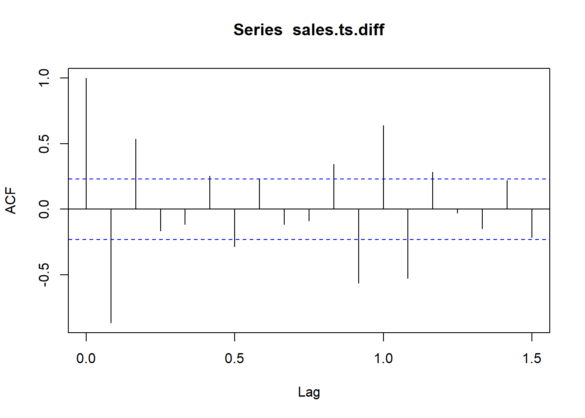
pacf(sales.ts.diff)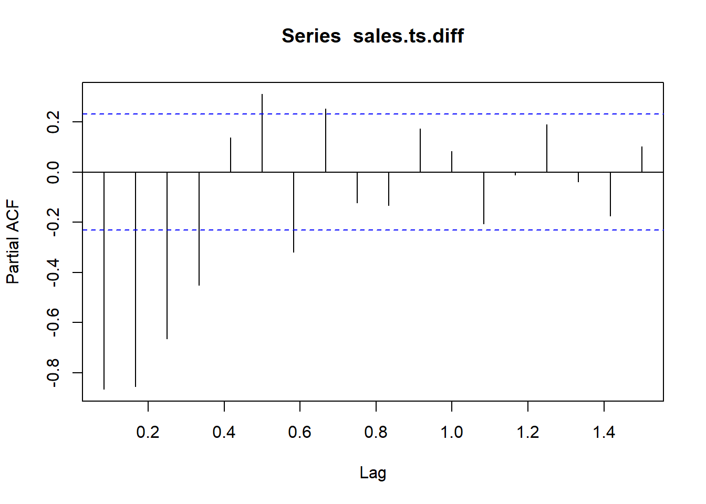
Ajuste Modelo ARIMA
(fit <- arima(sales.ts, c(1, 1, 0),seasonal = list(order = c(0, 1, 1), period = 12)))Call: arima(x = sales.ts, order = c(1, 1, 0), seasonal = list(order = c(0, 1, 1), period = 12))
Coefficients: ar1 sma1 -0.502 -0.511 s.e. 0.101 0.154
sigma^2 estimated as 0.0311: log likelihood = 20.49, aic = -34.99
Previsión
pred <- predict(fit, n.ahead = 5*12)
ts.plot(sales.ts,pred$pred, log = "y", lty = c(1,3), main="Previsión 5 años")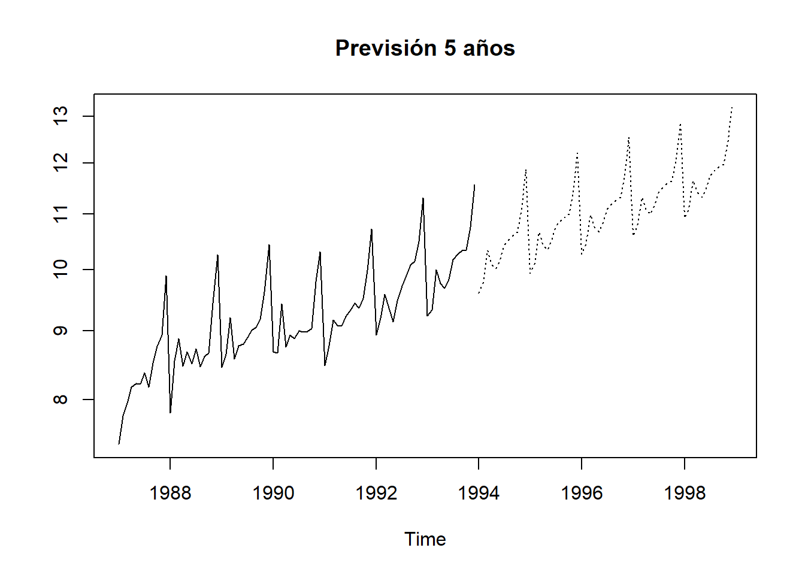